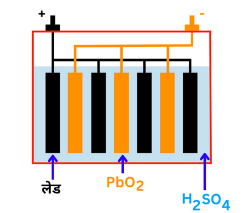

संचायक बैटरियाँ क्या है | इसके चित्र और प्रकार |
यह एक ऐसी बैटरी होती है जिसे उपयोग करने के बाद इसका आवेश खत्म हो जाने पर इसे फिर से विधुत धारा दे आवेशित कर के उपयोग मे लाया जा सकता है | सबसे महत्वपूर्ण संचायक सेल लेड संचायक बैटरी है | इसमें एनोड लेड का बना होता है तथा कैथोड लेड डाइऑक्साइड(PbO2) से भरे हुए लेड का ग्रिड होता है | इसके अंदर 38% सल्फ्यूरिक अम्ल का विलयन वैधुतअपघट्य का कार्य करता है | इस तरह, संचायक बैटरी एक बहुत ही उपयोगी तकनीक है जो विभिन्न उपकरणों के लिए उर्जा प्रदान करता है | इसका उपयोग हम अपनी गाड़ियों, मोटरसाइकिलों, मोबाईलो और अन्य उपकरणों के लिए भी करते है |
संचायक बैटरी के अंदर कौन सी धातु होती है ?
इसके अंदर दो धातु लेड(Pb) तथा लेड डाइऑक्साइड(PbO2) और सल्फ्यूरिक अम्ल (H2SO4) होता है |
संचायक बैटरी के कितने प्रकार होते है ?
संचायक बैटरी के दो प्रकार होते है |
- लेड अम्ल संचायक बैटरी
- क्षारीय संचायक बैटरी